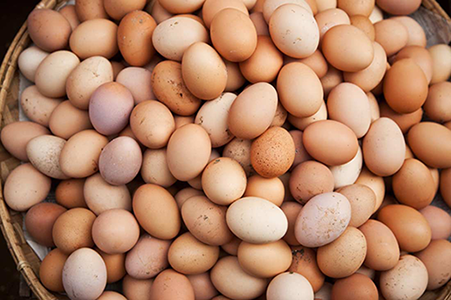

Poultry value chains link the actors and activities involved in delivering poultry and poultry products to the final
consumer, with products increasing in value at every stage. A poultry chain can involve production, transport,
processing, packaging and storage, and retailing. Activities require inputs – such as financing and raw materials
– which are used to add value and to bring poultry and poultry products to consumers. Understanding how poultry
value chains work is essential in order to develop them sustainably.
Larger-scale meat or egg production units are often vertically integrated, with breeding farms
for grandparent and parent birds, hatcheries, feed mills, and egg or meat processing facilities.
Production is generally located in, or near, cities and close to processing facilities and input providers.
Such systems mainly supply urban and peri-urban populations. Small- scale commercial farmers often produce
similar products, but less efficiently and with greater difficulty in securing quality inputs such as
chicks and feed.
Product
₱7,965.00
Feed manufacturing and the associated quality control programme are keys to successful fish culture. Unless the fisheries biologist understands and specifies the activities of the feed mill and its laboratory, profitable fish farming will be a matter of chance.
Dry feeds may be ground, sifted, screened, mixed, compressed, expanded, texturized, coloured and flavoured. By one or more of these processes, a wide variety of ingredients can be prepared into a standardized product. Since most fish have size and texture preferences and often react to colour, odour, and flavour, processing research is an integral part of fish culture
₱259.84
ERGONOMIC DESIGN - The plastic feed scoop is perfect for big jobs. This large scoop has an sturdy design that reduces spillage and allows for multiple scoops to be stacked for storage.
ULTRA DURABLE - The plastic scoop is made of highly durable polyethylene resin that is impact resistant, protects against warpage, and helps prevent stress cracks.
HEAVY DUTY HANDLE - The plastic feed scoop features a strong plastic handle that allows you to easily hold the scoop as well as stabalize the scooping tool upright when set down.
VERSATILE USE - The heavy duty farm scoop is perfect for a large variety of use cases such as scooping feed, adding supplements, and sorting seed.
MANY OPTIONS AVAILABLE - These premium feeding scoops are available in 11 other colors, allowing you to pick the option that best fits your needs.
Formulated with optimum levels of nutrients needed to achieve maximum growth potential of stags.
Fortified with essential enegy-enhancing vitamins and bio-available minerals for increased disease resistance.
Enhanced with multi-enzymes for improved feed efficiency.
Contains elevated levels of Choline to ensure proper development of tendons.

₱549.00/tray
Raw eggs are rich in protein and other micronutrients. The fatty acids they have can help your metabolism. They contain most of the essential amino acids, and one egg provides 27% of the daily choline requirements.